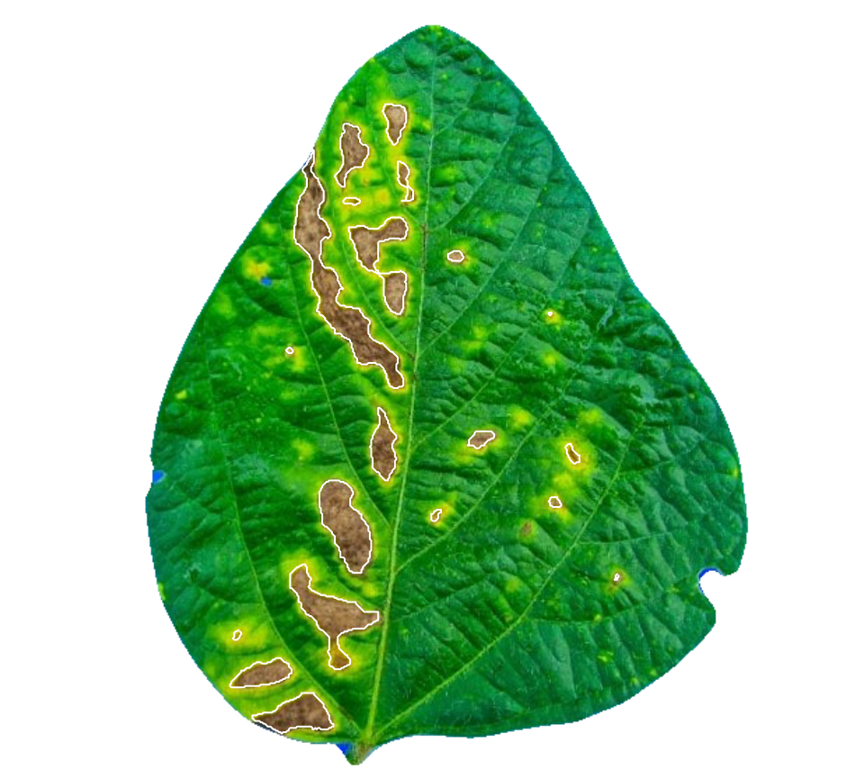

Getting started
The pliman (plant image analysis) package is designed to analyze plant images, particularly for leaf and seed analysis. It offers a range of functionalities to assist with various tasks such as measuring disease severity, counting lesions, obtaining lesion shapes, counting objects in an image, extracting object characteristics, performing Fourier Analysis, obtaining RGB values, extracting object coordinates and outlines, isolating objects, and plotting object measurements.
Leaf area measurement
To measure the leaf area in an image, you can use the analyze_objects() function. There are two ways to adjust the pixel area to metric units (cm):
- Using an object of known area to correct the measurements
- Knowing the image resolution in dots per inch (dpi)
Adjusting leaf area using a known object
To demonstrate the first approach, let’s count the number of objects
and plot their IDs using the marker = “id” argument in the
analyze_objects() function. This allows us to adjust the
leaf area using a known object, in this case, a leaf square with an area
of 4 cm².
library(pliman)
# The legacy packages maptools, rgdal, and rgeos, underpinning the sp package,
# which was just loaded, will retire in October 2023.
# Please refer to R-spatial evolution reports for details, especially
# https://r-spatial.org/r/2023/05/15/evolution4.html.
# It may be desirable to make the sf package available;
# package maintainers should consider adding sf to Suggests:.
# The sp package is now running under evolution status 2
# (status 2 uses the sf package in place of rgdal)
# |==========================================================|
# | Tools for Plant Image Analysis (pliman 2.0.1) |
# | Author: Tiago Olivoto |
# | Type 'citation('pliman')' to know how to cite pliman |
# | Type 'vignette('pliman_start')' for a short tutorial |
# | Visit 'http://bit.ly/pkg_pliman' for a complete tutorial |
# |==========================================================|
leaves <- image_pliman("la_leaves.jpg")
plot(leaves)
count <- analyze_objects(leaves, marker = "id")
To adjust the leaf area using the known object (id = 6), we can
utilize the get_measures() function.
area <-
get_measures(count,
id = 6,
area ~ 4)
# -----------------------------------------
# measures corrected with:
# object id: 6
# area : 4
# -----------------------------------------
# Total : 144.308
# Average : 28.862
# -----------------------------------------
str(area)
# Classes 'measures' and 'data.frame': 5 obs. of 34 variables:
# $ id : num 1 2 3 4 5
# $ x : num 536 438 110 177 314
# $ y : num 498 164 476 173 434
# $ area : num 41.41 35.47 31.36 27.52 8.55
# $ area_ch : num 41.69 35.65 32.24 28.01 8.58
# $ perimeter : num 26.3 23.6 23.9 21.8 11.7
# $ radius_mean : num 3.69 3.38 3.28 3.03 1.66
# $ radius_min : num 2.76 2.87 2.37 2.3 1.3
# $ radius_max : num 5.26 4.54 4.87 4.39 2.24
# $ radius_sd : num 0.655 0.419 0.654 0.52 0.262
# $ diam_mean : num 7.38 6.76 6.55 6.06 3.32
# $ diam_min : num 5.53 5.74 4.75 4.6 2.59
# $ diam_max : num 10.52 9.07 9.73 8.78 4.48
# $ major_axis : num 3.06 2.68 2.78 2.51 1.36
# $ minor_axis : num 2.156 2.111 1.847 1.783 0.985
# $ caliper : num 9.65 8.53 9.05 8.01 4.36
# $ length : num 9.68 8.52 9.11 8.01 4.35
# $ width : num 6.17 5.94 5.42 5.18 2.79
# $ radius_ratio : num 1.9 1.58 2.05 1.91 1.73
# $ theta : num 1.52 -1.53 1.56 1.56 -1.46
# $ eccentricity : num 0.71 0.614 0.748 0.703 0.691
# $ form_factor : num 0.75 0.798 0.69 0.73 0.784
# $ narrow_factor : num 0.997 1.001 0.993 1 1.003
# $ asp_ratio : num 1.57 1.43 1.68 1.55 1.56
# $ rectangularity : num 1.44 1.43 1.57 1.51 1.42
# $ pd_ratio : num 2.73 2.77 2.64 2.72 2.69
# $ plw_ratio : num 1.66 1.63 1.64 1.65 1.64
# $ solidity : num 0.993 0.995 0.973 0.983 0.996
# $ convexity : num 0.887 0.916 0.904 0.899 0.883
# $ elongation : num 0.363 0.302 0.404 0.353 0.357
# $ circularity : num 16.8 15.7 18.2 17.2 16
# $ circularity_haralick: num 5.63 8.08 5.01 5.83 6.33
# $ circularity_norm : num 0.743 0.792 0.683 0.723 0.77
# $ coverage : num 0.0956 0.0819 0.0724 0.0635 0.0197
# plot the area to the segmented image
image_segment(leaves, index = "NB", verbose = FALSE)
plot(leaves)
plot_measures(area, measure = "area")Adjusting leaf area using image resolution
When the image resolution is known, we can use the dpi()
function to compute the dots per inch (dpi) of an image. This allows us
to convert pixel units to metric units. To apply this method, you need
to know the size of any object in the image. You can refer to a tutorial
here for more
details.
area_dpi <- get_measures(count, dpi = 83.5)
plot(leaves)
plot_measures(area_dpi,
measure = "area",
vjust = -25)
Counting crop grains
Here, we will count the grains in the image
soybean_touch.jpg. This image has a cyan background and
contains 30 soybean grains that touch each other.
soy <- image_pliman("soybean_touch.jpg")
plot(soy)
# Count the objects in the image
grains <- analyze_objects(soy)
# Draws the object id (by default)
plot_measures(grains)
Disease severity
Using image indexes
To compute the percentage of symptomatic leaf area you can use the
measure_disease() function you can use an image index to
segment the entire leaf from the background and then separate the
diseased tissue from the healthy tissue. Alternatively, you can provide
color palette samples to the measure_disease() function. In
this approach, the function fits a general linear model (binomial
family) to the RGB values of the image. It then uses the color palette
samples to segment the lesions from the healthy leaf.
In the following example, we compute the symptomatic area of a soybean leaf. The proportion of healthy and symptomatic areas is given as a proportion of the total leaf area after segmenting the leaf from the background (blue).
img <- image_pliman("sev_leaf.jpg")
# Computes the symptomatic area
measure_disease(img = img,
index_lb = "B", # to remove the background
index_dh = "NGRDI", # to isolate the diseased area
threshold = c("Otsu", 0), # You can also use the Otsu algorithm in both indexes (default)
plot = TRUE)
# $severity
# healthy symptomatic
# 1 92.62721 7.372791
#
# $shape
# NULL
#
# $statistics
# NULL
#
# attr(,"class")
# [1] "plm_disease"Interactive disease measurements
An alternative approach to measuring disease percentage is available
through the measure_disease_iter() function. This function
offers an interactive interface that empowers users to manually select
sample colors directly from the image. By doing so, it provides a highly
customizable analysis method.
One advantage of using measure_disease_iter() is the
ability to utilize the “mapview” viewer, which enhances the analysis
process by offering zoom-in options. This feature allows users to
closely examine specific areas of the image, enabling detailed
inspection and accurate disease measurement.
img <- image_pliman("sev_leaf.jpg", plot = TRUE)
measure_disease_iter(img, viewer = "mapview")RGB values for objects
The function analyze_objects() can also be used to get
the Red Green and Blue (RGB) -or any other image index- for objects in
an image. To do that, use the argument object_index.
img <- image_pliman("soy_green.jpg")
# Segment the foreground (grains) using the normalized blue index
# Shows the average value of the blue index in each object
rgb <-
analyze_objects(img,
object_index = "B",
pixel_level_index = TRUE)
# Plots the B index for each grain
plot_measures(rgb, measure = "B")Getting help
If you come across any clear bugs while using the package, please consider filing a minimal reproducible example on github. This will help the developers address the issue promptly.
Suggestions and criticisms aimed at improving the quality and usability of the package are highly encouraged. Your feedback is valuable in making {pliman} even better!
A little bit more!
For more examples on how to utilize {pliman} for analyzing plant images, you can visit this this link. On that page, you will find downloadable source code and images that can be used for your analysis. Additionally, you can watch a talk about {pliman} (in Portuguese) here to gain more insights and tips on using the package effectively.
Get ready with your project and let {pliman} shine with its image analysis capabilities!